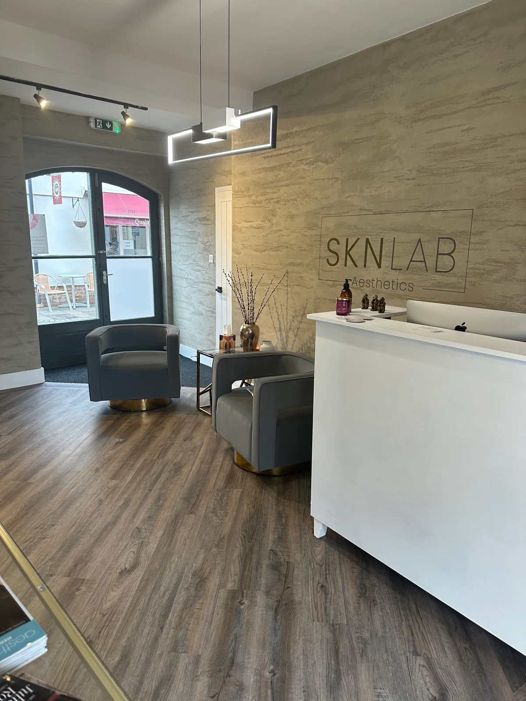

Holly
Owner & lead aesthetic practitioner
More than 21 years in the industry, with a focus on injectable treatments and skin rejuvenation.

A personal approach to advanced skincare and aesthetic treatments, in the heart of Ware.

From everyday skin health to specialist treatments, begin with a consultation and a plan that suits you.
Explore skin boosters, polynucleotides, microneedling and collagen-focused treatments.
Explore skin rejuvenation02Discover laser hair removal, tattoo removal and skin rejuvenation.
Explore laser treatments03Professional skincare, peels, vitamin treatments and wellness services.
Explore skin & wellness
A considered approach to skin health, with your individual features and goals at the centre.
Founded by Holly, SKN Lab brings together a welcoming clinic, a dedicated team and a wide range of aesthetic and skincare services.
Discover our clinicOwner & lead aesthetic practitioner
More than 21 years in the industry, with a focus on injectable treatments and skin rejuvenation.
Nurse practitioner & prescriber
An experienced nurse with a specialist interest in skin boosters and ear micro-suction.
Nurse & laser technician
A registered nurse and former midwife, offering laser treatments at the clinic.
Aesthetic practitioner & tattoo artist
A calm, attentive approach to aesthetics and tiny tattoos.
Not sure where to begin? Start with a free consultation to discuss your goals and explore suitable options.
Find us at 116 High Street, in the centre of Ware.
Plan your visit